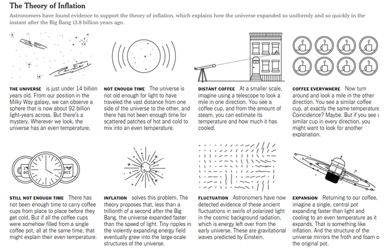

Alan Guth was one of the first physicists to hypothesize the existence of inflation, which explains how the universe expanded so uniformly and so quickly in the instant after the Big Bang 13.8 billion years ago.
Credit Rick Friedman for The New York Times
Share
Tweet
CAMBRIDGE, Mass. — One night late in 1979, an itinerant young physicist named Alan Guth, with a new son and a year’s appointment at Stanford, stayed up late with his notebook and equations, venturing far beyond the world of known physics.
He was trying to understand why there was no trace of some exotic particles that should have been created in the Big Bang. Instead he discovered what might have made the universe bang to begin with. A potential hitch in the presumed course of cosmic evolution could have infused space itself with a special energy that exerted a repulsive force, causing the universe to swell faster than the speed of light for a prodigiously violent instant.
If true, the rapid engorgement would solve paradoxes like why the heavens look uniform from pole to pole and not like a jagged, warped mess. The enormous ballooning would iron out all the wrinkles and irregularities. Those particles were not missing, but would be diluted beyond detection, like spit in the ocean.
“SPECTACULAR REALIZATION,” Dr. Guth wrote across the top of the page and drew a double box around it.
On Monday, Dr. Guth’s starship came in. Radio astronomers reported that they had seen the beginning of the Big Bang, and that his hypothesis, known undramatically as inflation, looked right.
Reaching back across 13.8 billion years to the first sliver of cosmic time with telescopes at the South Pole, a team of astronomers led by John M. Kovac of the Harvard-Smithsonian Center for Astrophysics detected ripples in the fabric of space-time — so-called gravitational waves — the signature of a universe being wrenched violently apart when it was roughly a trillionth of a trillionth of a trillionth of a second old. They are the long-sought smoking-gun evidence of inflation, proof, Dr. Kovac and his colleagues say, that Dr. Guth was correct.
Inflation has been the workhorse of cosmology for 35 years, though many, including Dr. Guth, wondered whether it could ever be proved.
If corroborated, Dr. Kovac’s work will stand as a landmark in science comparable to the recent discovery of dark energy pushing the universe apart, or of the Big Bang itself. It would open vast realms of time and space and energy to science and speculation.
In our own universe, it would serve as a window into the forces operating at energies forever beyond the reach of particle accelerators on Earth and yield new insights into gravity itself. Dr. Kovac’s ripples would be the first direct observation of gravitational waves, which, according to Einstein’s theory of general relativity, should ruffle space-time.
Marc Kamionkowski of Johns Hopkins University, an early-universe expert who was not part of the team, said, “This is huge, as big as it gets.”
He continued, “This is a signal from the very earliest universe, sending a telegram encoded in gravitational waves.”
The ripples manifested themselves as faint spiral patterns in a bath of microwave radiation that permeates space and preserves a picture of the universe when it was 380,000 years old and as hot as the surface of the sun.
Dr. Kovac and his collaborators, working in an experiment known as Bicep, for Background Imaging of Cosmic Extragalactic Polarization, reported their results in a scientific briefing at the Center for Astrophysics here on Monday and in a set of papers submitted to The Astrophysical Journal.
The results are the closely guarded distillation of three years’ worth of observations and analysis. Eschewing email for fear of a leak, Dr. Kovac personally delivered drafts of his work to a select few, meeting with Dr. Guth, who is now a professor at Massachusetts Institute of Technology (as is his son, Larry, who was sleeping that night in 1979), in his office last week.
“It was a very special moment, and one we took very seriously as scientists,” said Dr. Kovac, who chose his words as carefully as he tended his radio telescopes.
Andrei Linde of Stanford, a prolific theorist who first described the most popular variant of inflation, known as chaotic inflation, in 1983, was about to go on vacation in the Caribbean last week when Chao-Lin Kuo, a Stanford colleague and a member of Dr. Kovac’s team, knocked on his door with a bottle of Champagne to tell him the news.
Stanford Professor Andrei Linde celebrates physics breakthrough | Video by Stanford University
Confused, Dr. Linde called out to his wife, asking if she had ordered anything.
“And then I told him that in the beginning we thought that this was a delivery but we did not think that we ordered anything, but I simply forgot that actually I did order it, 30 years ago,” Dr. Linde wrote in an email.
John E. Carlstrom of the University of Chicago, Dr. Kovac’s mentor and head of a competing project called the South Pole Telescope, pronounced himself deeply impressed. “I think the results are beautiful and very convincing,” he said.
Paul J. Steinhardt of Princeton, author of a competitor to inflation that posits the clash of a pair of universes as the cause of genesis, said that if true, the Bicep result would eliminate his model, but he expressed reservations about inflation.
Lawrence M. Krauss of Arizona State and others also emphasized the need for confirmation, noting that the new results exceeded earlier estimates based on temperature maps of the cosmic background by the European Space Agency’s Planck satellite and other assumptions about the universe.
“So we will need to wait and see before we jump up and down,” Dr. Krauss said.

The Bicep2 telescope, in the foreground, was used to detect the faint spiraling gravity patterns — the signature of a universe being wrenched violently apart at its birth.
Similarly, the universe could “supercool” and stay in a unified state too long. In that case, space itself would become imbued with a mysterious latent energy.
Inserted into Einstein’s equations, the latent energy would act as a kind of antigravity, and the universe would blow itself up. Since it was space itself supplying the repulsive force, the more space was created, the harder it pushed apart.
What would become our observable universe mushroomed in size at least a trillion trillionfold — from a submicroscopic speck of primordial energy to the size of a grapefruit — in less than a cosmic eye-blink.
Almost as quickly, this pulse would subside, relaxing into ordinary particles and radiation. All of normal cosmic history was still ahead, resulting in today’s observable universe, a patch of sky and stars billions of light-years across. “It’s often said that there is no such thing as a free lunch,” Dr. Guth likes to say, “but the universe might be the ultimate free lunch.”
Make that free lunches. Most of the hundred or so models resulting from Dr. Guth’s original vision suggest that inflation, once started, is eternal. Even as our own universe settled down to a comfortable homey expansion, the rest of the cosmos will continue blowing up, spinning off other bubbles endlessly, a concept known as the multiverse.
So the future of the cosmos is perhaps bright and fecund, but do not bother asking about going any deeper into the past.
We might never know what happened before inflation, at the very beginning, because inflation erases everything that came before it. All the chaos and randomness of the primordial moment are swept away, forever out of our view.
“If you trace your cosmic roots,” said Abraham Loeb, a Harvard-Smithsonian astronomer who was not part of the team, “you wind up at inflation.”
A version of this article appears in print on March 18, 2014, on page A1 of the New York edition with the headline: Space Ripples Reveal Big Bang’s Smoking Gun. Order Reprints| Today's Paper|Subscribe
More in Space & Cosmos
Mars Shows Signs of Having Flowing Water, Possible Niches for Life, NASA Says
Mars Is Pretty Clean. Her Job at NASA Is to Keep It That Way.
Life on Mars? You Read It Here First.
George Mueller, Engineer Who Helped Put Man on Moon, Dies at 97
Geoffrey Marcy to Resign From Berkeley Astronomy Department
Geoffrey Marcy’s Berkeley Astronomy Colleagues Call for His Dismissal